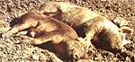
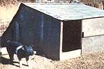
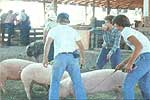
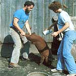
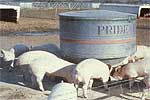
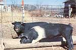

Veterinarian Randy Kidd gives you the lowdown on . . .
If you'd like to enjoy pork that costs only pennies (not dollars!) a pound -and tastes far better than the plastic-wrapped meat you buy in a supermarket-you ought to consider raising your own pigs. Just one of the chunky critters can produce a great deal of premium, lowpriced meat for a homesteading family . . . and the four-legged garbage disposals can be fattened on a diet that consists of little more than garden by-products and kitchen leftovers!
What's more, if you begin-as many folks do-with already weaned piglets, you'll bypass the somewhat difficult task of hog breeding . . . and find that simply rearing the animals is downright easy. In fact, in the short space of the article you're reading right now, I'll provide you with all the basic information you'll need to produce healthy-and meaty-porkers from purchased, pint-sized piglets.
RECOGNIZE YOUR MARKET
You should be aware-right from the start-that the best "marketplace" for your homegrown pork will be your own dinner table. Of course, if you eventually "harvest" more meat than you can use, many folks will be willing to buy (or trade for) some of your fine-flavored victuals . . . but there's a world of difference between bartering off a little extra bacon and competing in the commercial pig-raising business.
A four- to eight-week-old piglet should weigh anywhere from 20 to 50 pounds and will probably cost you around $35. (Note: This price is a very rough estimate.) If you caretake the animal for about five months (until it weighs 200 to 220 pounds), the butchering-size critter will yield approximately 135 pounds of "retail" meat products . . . consisting of roughly 24 pounds of ham, 20 pounds of bacon, 17 pounds of pork roast, 18 pounds of picnic shoulder, 7 pounds of pork chops, 8 pounds of sausage, 7 pounds of "miscellaneous" cuts, 6 pounds of salt pork, and 31 pounds of lard. (You may also want to utilize some of the "extra" pig parts in the form of scrapple, sweetbreads, chitterlings, or "mountain oysters".)
Be careful, though, not to raise your animal to beyond that prime butchering weight of 200220 pounds. Why? Because such a "market size" hog has reached the optimum stage of growth: Let the curly-tailed critter get any bigger and the animal's further poundage gains will be expensive (in terms of the feed required) and will consist of little more than extra fat.
By the way, each porker you raise to maturity will produce a large supply of manure ( about 1.6 pounds per 100 pounds of pig per day) for your garden, too. Of course, that kind of productivity can be a drawback for a few wouldbe swine raisers . . . because some communities have local ordinances against the ever-present "essence" associated with pig manure. (On the other hand, folks with their minds on their gardens-and wallets-become almost partial to piggly aromas.)
BUILD YOUR ANIMAL HOUSE WELL
There's only one really difficult chore associated with raising weaned piglets . . . keeping the mobile pork chops at home. Restricting a small swine's whereabouts may sound like a simple enough task, but Mother Nature provides each pig with a snout that's perfectly designed for assaulting barricades. Any fence you build will have to be strung tighter than the fifth string on a banjo-especially where the barrier is closest to the ground-if you expect to keep your porkies from prying their way between the stays.
You can construct a taut welded-wire fence, a sturdy wooden enclosure, or a two-stranded electric fence consisting of a bottom cable six to eight inches above the turf with a second line eight inches above that. (None of your restrainers will need to be more than 32 inches tall, though, because pigs can't jump very high.) You might also want to dig a trench under your barricade and fill that ditch with old logs or rocks . . . to discourage any porcine tunneler's "Great Escape" plans.
My own experience has convinced me that creating a truly hog-tight fence is no easy endeavor. In fact, I spent one entire summer chasing a batch of root-loving runaways out of my vegetable garden. I finally gave up and bought commercial hog panels to keep the piglets where I wanted them. (The 16-foot, quarter-inch steel grid segments have done the trick for me, but-at around a dollar per running foot-such pig-stopping walls are pretty dang expensive.)
In addition to fencing, you'll need to construct a shelter for the animals . . . and provide them with a way to cool themselves off. Just about any three-sided, roofed house (even an enclosure made from old hay bales, such as that described in "Straw Barns and Other Sheds", MOTHER NO. 58, page 42) will protect your livestock from storms and winter winds. But since pigs don't pant very effectively-and don't sweat at all-you'll need to be absolutely certain each pork-producer has 15 to 20 square feet of shade (with the shadow-making object located at least four feet off the ground). It's also wise to provide a mud wallow or a sprayer . . . so that any "roasting" pig can cool off during especially sultry weather.
BUY THE BEST ANIMALS
If you're not going to try to raise the finest quality pigs available, you'd be better off-as far as both your time and your wallet are concerned-not to rear any swine at all. Of course, it may take a little practice before you can recognize a premium porker when you see one, but you can gain any needed instructional experience by attending county fairs or local livestock shows, and listening closely when the judges explain why they select one hog specimen over another.
And once you learn how to pick out the best-looking pigs in a litter, do so! NEVER buy the runts of a piglet crop-even if the offered purchase price sounds like a bargain deal-because too many "tail enders" never grow worth a hoot.
You'll probably find that the best time to acquire a young barrow or gilt is at the beginning of your garden's growing season. You'll have plenty of leftover crop pickings for the hog around then, and-in most cases-you'll be able to expect to end up with a ready-to-eat adult pig by fall or early winter (which, conveniently enough, is the time of year that provides the best butchering weather).
FEED YOUR CRITTERS WELL
Water is the most important food you can give to your porkers ( or, for that matter, to any of your livestock). A fattening pig guzzles as much as three gallons of liquid per day. . . and the bacon bearers will consume a lot of solid foods, as well. Fortunately, since the living garbage recyclers will pack away almost anything (including vegetables, fruits, milk, meat scraps, spoiled eggs, garden clippings, weeds, and more), the critters can pretty well balance their diets by themselves.
Still, a 160-pound shoat can handle around 60 pounds of such "garbage" a day, so you'll probably need to supplement your swillswigger's diet with grain or a commercial ration containing 20 to 25% protein (the grain also helps the pig reduce paunchiness and produce firmer, leaner pork). In addition, you may want to keep a steady supply of vitamin and mineral supplements available.
HELP YOUR ANIMALS PREVENT THEIR OWN DISEASE
Pigs are extremely hardy beasts ( their ability to revert rapidly to the feral state attests to this), but-like all animals-they can get sick. A good vaccination program will, however, prevent most illnesses: Check with your local veterinarian so you can inoculate against the diseases specific to your region.
Since the snout-nosed beasts are continually rooting around in their own manure, pigs have a never-ending opportunity to acquire internal parasites. Your ground-grubbers will need to be wormed every four to six weeks (with the anthelmintic your vet recommends for your locale, of course). [ EDITOR'S NOTE: For more on this subject, see Dr. Kidd 's two-part article, "How to Deal With Internal Parasites" (MOTHER NO. 56, page 76 and NO. 57, page 56). Back issues of MOTHER are available-for $3.00 each plus $1.00 shipping and handling per order-from THE Mother Earth News (restricted) , P.O. Box 70, Hendersonville, North Carolina 28791.]
External parasites-like the anemia causing hog louse-can also be debilitating, so periodically apply a spray, a dust, or a pour-on insecticide to ward off the blood-sucking pests (rotenone is a decent organic external parasiticide). In our area, folks employ such treatments every four to six weeks and then "bed down" any pigs that will be kept over the winter with two doses-administered three to four weeks apart after the first killing frost-of the bug killer.
AND NEXT TIME . . .
Well, that's that. We've covered all the basic rules for converting healthy piglets into full-sized freezer fillers. There are, though, a few extra tricks of the trade you'll need to know if you want to rear pork from "scratch" . . . so I'll provide information on breeding your own pigs in MOTHER NO. 64.
|
 Pig bliss! |
 The author's pig shed was built by Kris Kidd out of scrap 2 X 4's, a cut-up packing crate, and leftover roofing shingles. |
 Learn to recognize premium porkers at pig shows. |
|
 Kris douses a hog with tick and louse powder. |
 Kansas State university hogs chow down at a commercially made feeder (its doors open by ""snout power"") |
 Dr. Kidd's swine eat from a feeder that was made by cutting an old water heater in half. (An older pig will knock such a food bin over unless you weld scrap iron legs at the ends.) |